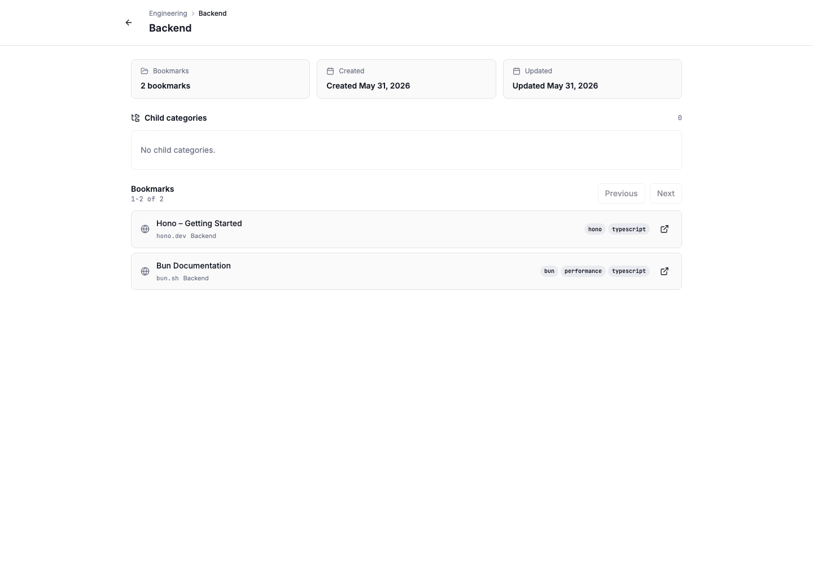
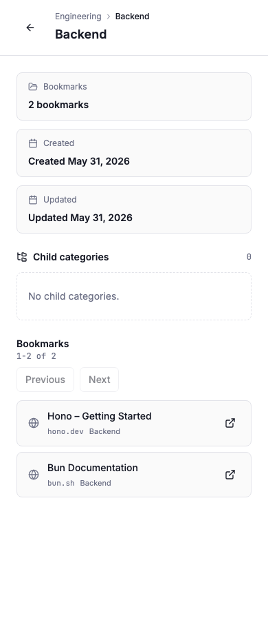

Little Imp Task Report
Category Detail Page

Before
Categories were visible in the sidebar after TASK-095, but opening a category only applied a library filter. There was no stable category route, no dedicated page for category metadata, and no focused place to inspect child categories and category-scoped bookmarks together.
Problem
TASK-096 needed a dedicated /categories/:id view that could be opened from sidebar category navigation, survive direct reloads, show hierarchy and metadata, and use daemon pagination instead of relying on the already-loaded library page.
Changes Added
- Added a dedicated
/categories/:idReact route and page. - Resolved category identity, parent path, child categories, and metadata from the cached
GET /categoriestree. - Rendered metadata panels for bookmark count, creation date, and update date.
- Added child category cards that navigate to their own stable detail routes.
- Loaded category bookmarks through
GET /bookmarks?category_id=...&limit=20&offset=.... - Added previous/next pagination controls and empty/unknown/error states.
- Kept bookmark rows local-first by rendering stored favicons only and using an in-app icon fallback when no favicon is stored.
- Keyed pagination state to the active category id so child-category navigation starts from offset 0.
- Kept existing sidebar category filtering intact and added a hover action for opening the detail route.
Result
Route
Category pages now have durable URLs and show the category path, making nested category inspection possible without depending on library filter state.
Pagination
The bookmark list is scoped by category id and advances by daemon offset without carrying stale page state across category navigation.
Verification
npx vitest run src/pages/CategoryDetail.test.tsx src/components/AppSidebar.test.tsxpassed with 21 tests, including regressions for local favicon fallback and category-keyed pagination.npm run lintexited 0 with the repository's existing 9 warnings.npm run type-checkpassed.npm testpassed with 206 tests.npm run test:daemonpassed with 386 tests.npm run docs:api:checkpassed.npm run buildpassed with the existing Vite chunk-size warning.npm run test:e2epassed with 19 tests.git diff --checkpassed.- Browser visual verification used an isolated seeded daemon on
127.0.0.1:33210and Vite on127.0.0.1:8080. Desktop and mobile screenshots were captured, inspected, and console errors were empty.
Additional Screenshots

Implementation Notes
The page intentionally reuses the existing category tree and bookmark list APIs. No daemon route or API contract change was needed. Sidebar row clicks still apply library filters; the new route is exposed as an icon action so TASK-095's filter behavior stays intact.
Files Changed
src/App.tsxsrc/pages/CategoryDetail.tsxsrc/pages/CategoryDetail.test.tsxsrc/components/AppSidebar.tsxsrc/components/AppSidebar.test.tsxtasks/done/TASK-096-category-detail-page.mdtasks/README.mddocs/parity/grimoire-parity-task-proposals.mddocs/task-reports/